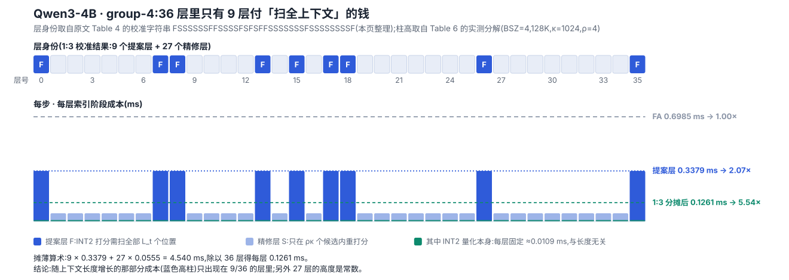

阅读导航(图文按讲述顺序穿插)
速览:一句话与五个数 背景:token 级稀疏的「索引税」 观察:层间漂移是局部的,不是重排 方法:Proposal-Refined 两段式 + INT2 提案 精度实验:推理与长上下文的取舍 系统与效率:成本只落在四分之一的层上 补充分析:换架构、换长度、换任务、换模型 点评:它到底省的是哪笔钱 术语速查(阅读中随时回看)
01 · Overview
速览:一句话与五个数
长上下文解码时,每一层都要回答同一个问题:这一步的 query 该看历史上哪 κ 个 token?
回答这个问题要先给全部 历史 token 打分,于是「省计算」的稀疏注意力自己先付了一笔索引税 。
跨层共享索引是公认的省税办法:少数几个锚层 (论文叫 Proposal Layer)算一次 top-κ,后面几层照抄。
照抄的问题很明显——每一层的注意力分布并不一样,抄得越远越不准。
Prism Attention 的答案不是「抄得更勤」,而是改抄的东西 :锚层不再只交出 κ 个 token,而交出
$\rho\kappa$ 个候选($\rho$ 取 2 到 4);下游精修层 (Refined Layer)拿这个池子,只对池内的候选重新打分、
自己挑出属于自己的 top-κ。这样一来,「谁被看到」的决定权回到每一层手里,但成本从 $O(L_t)$ 降到 $O(\rho\kappa)$——
与上下文长度无关 。这是整篇唯一的核心机制,其余设计(INT2 量化提案、离线校准的层分配)都是为它服务的。
端到端解码加速
3.36× 128K / BSZ=16,vs FlashAttention:15.03 ms → 4.47 ms
推理基准均分
71.43 / 73.83 Qwen3-4B / Qwen3-8B;全注意力 71.95 / 74.33
LongBench 均分
54.98 / 54.97 Qwen3-4B / Qwen3-8B;全注意力 55.07 / 54.58
精修单层成本
≈0.011 ms 8K→128K 几乎不变(索引精修部分)
配置
κ=2048, ρ=4 / 2 长上下文 / 推理任务;Proposal:Refined = 1:3
读数约定: 本页全部数字以论文原文为准;凡由本页依据论文配置整理、归纳或换算的内容,均以「整理 」「推算 」显式标注,便于与论文口径区分。
记号沿用论文:$L_t$ 为当前上下文长度,$\ell$ 为层号,$\kappa$ 为稀疏预算(每层最终选中的 token 数),
$\rho$ 为候选池放大系数,$n=\rho\kappa$ 为候选池大小;$\mathcal{F}$ 为提案层集合,$\mathcal{S}$ 为精修层集合。
图注末尾的「报告 p.X」指该图在 arXiv:2610.22985 原文中的页码。
三个贡献,逐条对账
① 一个观察(改的是问题,不是方法): 跨层的显著 token 变化是局部 的。
精确的 top-κ 索引确实逐层不同,但承载大部分注意力质量的核心 token 基本稳定,变化集中在原选区边界附近
(第 3 节,图 1–3)。这条观察把「要不要共享」的问题换成了「共享多宽的集合 」。② 一个机制(第 4 节): Proposal-Refined Index Sharing——提案层产出 $\rho\kappa$ 候选池,精修层在池内重新打分选 top-κ。
把跨层复用从「刚性复制支持集」变成「提案约束下的局部搜索 」,并且精修成本与上下文长度解耦。③ 一处工程(第 4.2 节): Quantized Proposal Construction——提案层的全上下文打分改用 INT2 分组非对称量化的
键缓存来做,按 KV 组做 max 归约,每个 KV head 每步只读一次。2-bit 打分只用于选索引 ,选中 token 的实际注意力计算仍用 BF16。
这篇在合集里的位置
这是注意力与 KV Cache 一叠的第 9 篇(合集第 9 篇),落在「复用同模型已有的选择 」这一档,但它是那一档的修正版 :
HySparse2 复用全注意力层的 KV 与索引、KSA V2 复用模型自己已有的 Summary、Declarative Attention 让模型自己声明——
它们共享的都是一个现成的、被信任的 决定。Prism 的立场是:决定可以被共享,但不能被信任 ,
共享的应该是一个更宽的候选集,而不是一个已经做完的判决。
读之前先记住一句话: Prism 的加速来自「把 $O(L_t)$ 的全上下文打分限制在 1/4 的层里 」,
而不是来自「候选池很小」。候选池其实是放大的(4 倍);省下来的是扫描范围 ,不是池子大小 。
这个区别决定了它在哪里有效、在哪里失效(见第 6 节与第 8 节的交叉点讨论)。
02 · Background
背景:token 级稀疏的「索引税」
两条稀疏路线,一条更细也更贵
为长上下文省注意力的工作大致分成两族。块级 (block-level)路线把 KV 切成块,按块打分、按块跳过,
有些方法专攻 prefill(计算密集),有些专攻 decoding(带宽密集),近两年也有端到端统一训练的路线。
块级的优点是天然对齐 GPU 的连续访存、内核效率高;缺点是粒度粗,一个块里混着关键 token 和噪声 token 时只能整块保留或整块丢弃。
token 级 路线追求更细的粒度:只保留真正重要的那些 token。DeepSeek Sparse Attention(DSA)在 DeepSeek-V3.2 上
把这个思路做到了大规模生产部署,GLM-5 等模型随后跟进。但 token 级稀疏有一个绕不开的代价:
要选出 top-κ 个 token,就得给全部 $L_t$ 个 token 打分 。于是每一次解码步骤、每一层都要付一次 $O(L_t)$ 的索引开销。
层数越多、上下文越长,这笔钱越像固定成本——它不随稀疏度下降而下降。
$$s_t^{\ell}(i)=\phi\!\left(q_t^{\ell},\,k_i^{\ell}\right),\qquad
\mathcal{T}_t^{\ell}=\operatorname{TopK}\!\left(s_t^{\ell},\,\kappa\right),\qquad i\in[L_t] \tag{1–2}$$
式 (1)(2) 就是这笔税的来源:$\phi$ 是打分函数,$\mathcal{T}_t^{\ell}$ 是本层理想的稀疏支持集。
精确求它需要对 $i=1\ldots L_t$ 全部算一遍。注意这里的成本结构:注意力输出只算 κ 个 token(便宜),但选出这 κ 个要扫 $L_t$ 个(昂贵) 。
论文的全部动机就是这句话。
既有解法:少算几次索引,然后照抄
既然相邻层的注意力分布高度相关,一个自然的办法是只在少数层算索引,其余层复用 。
这条线已经很长:TidalDecode、LessIsMore、OmniKV 直接把锚层的 top-κ 传播给后续层;
Kascade、HyLRA 把锚层位置的选择写成动态规划问题;IndexCache 用贪心搜索找更稳健的锚点布局。
Prism 自己沿用 IndexCache 的离线校准流程来划分提案层/精修层,改的是被传递的东西 和被消费的方式 。
同代方法的定位对照(依据论文 §2 与 §5.1 整理,非论文原表)
方法 选择粒度 索引由谁产生 跨层如何共享 论文口径下的定位
Quest 块(page) 当前 query 与每页键极值估计关键性 不共享,逐层自算 块级解码基线,块大小 32 SeerAttention-R 块 自蒸馏训出的注意力门控 不共享,所有层都稀疏 块级学习式基线,块大小 64 LessIsMore(LIM) token 单个选择层按头合并重要性排名 跨头合并成一套 token 集,并固定并上最近窗口 训练-free 跨层复用基线 IndexCache(IDC) token 少量锚层(indexer)算 top-κ 后续共享层直接复用这 κ 个索引 最直接的「静态复用」基线 Prism token 1/4 的提案层算 $\rho\kappa$ 候选池(INT2 打分) 精修层在池内重新打分 后自选 top-κ 复用「候选」而非「判决」
表中定位与超参取自论文 §5.1「Baselines」与「Implementation Details」;「选择粒度 / 索引由谁产生」两列是本页对方法机制的归纳。
静态复用的两难,一句话说清
锚层越多,索引越新鲜,但索引开销也越接近「每层都算」;复用层越多,省得越多,但复用的索引离本层最优点越远。
论文把这个两难写成了一句很朴素的话:增加锚层能拿到更新的稀疏支持但抬高构造开销,增加复用层能降低开销但让索引漂移 。
已有的所有锚层搜索工作(Kascade 的 DP、HyLRA 的混合层复用、IndexCache 的贪心)都是在这条张力曲线上找位置 ,
而 Prism 想做的不是找一个更好的位置,而是把这条曲线本身压平 :让复用层不再只能照抄,而是能在便宜的前提下自纠。
本节结论: 问题不在「共享索引」这个动作,而在「共享的是一个已完成的判决」。
只要共享的集合稍微宽一点,下游层就有余地在自己身上重新做一次便宜的决定——这正是第 3 节要验证的前提。
03 · Observations
观察:层间漂移是局部的,不是重排
第 2 节留下一个必须先用实验回答的问题:复用的索引到底错在哪里?错的量有多大?
论文用三张图回答了它,顺序很讲究:图 1 说明「错得有多快」,图 2 说明「错在哪儿」,图 3 说明「加宽多少就够」 。
图 1:重叠率随层距衰减,长上下文衰减更快
作者在 Qwen3-4B(36 层、32 个注意力头)上跑了三条数学推理基准(AIME24、MATH500、GPQA),每条采 10 个样本,
分别在约 1K 与 8K 的解码长度上取 32 个连续解码步,计算「参考层 $\ell$ 与层 $\ell+d$ 的 top-128 索引重叠率」,$d$ 从 0 扫到 7。
横轴是层距 offset,纵轴是重叠率,实线是 1K、虚线是 8K。
Figure 1: Cross-layer overlap ratio across varying distances of different layer offset.
读图注意三点。① offset=0 时重叠率必然是 1.00(自己和自己比),所以真正有信息量的是 offset≥1:
仅仅隔一层,top-128 的重叠率就掉到约 0.36–0.40(1K) ,说明「相邻层选同一批 token」这个假设一开始就不成立。
② 之后是缓慢单调下降:1K 的三条曲线在 offset 7 时落到约 0.33–0.37。
③ 更关键的是长短上下文的差距 :8K 的虚线整体压在 1K 下方,其中 MATH_8K 从约 0.30 一路掉到约 0.21,
AIME24_8K 从约 0.36 掉到约 0.33——上下文越长,索引漂移越快,静态复用越吃亏。
这张图正是「复用层越多越省、但越不准」那句话的实验证据。
报告 p.1
这张图容易被误读成一个悲观结论:「重叠率只有 1/3,跨层复用根本不可行」。论文的洞察恰恰相反,
它接下来要证明的是重叠率低不等于信息丢失多 ——因为不同的 token 承载的注意力质量是完全不同的。
图 2:变化是局部的,集中在原选区的边界上
作者把目标层(精修层)自己的 top-128 索引,按它们在参考层(提案层)中的排名分成三档:
落在参考层 top-128 里 、落在参考层第 128–511 名 、落在参考层 top-512 之外 。
如果漂移是「重排」,第三档(彻底换人)应该占大头;如果漂移是「局部微调」,变化应该集中在第二档。
Figure 2: Localized evolution of sparse indices across layers within proposal regions.
左图 (a) 从 L0、L9、L18、L27 四个提案层分别向后追若干层,右图 (b) 逐对比较相邻层 $L_\ell \to L_{\ell+1}$。
两图的结论一致:目标层 top-128 里只有 约三分之一 落在参考层的 top-128 内(索引口径),
但把参考池从 128 放大到 512($\rho=4$)之后,绝大多数索引都能被覆盖——剩下的变化挤在 128–511 这个紧邻边界的带子 里,
真正「跑到 top-512 之外」的比例很小。也就是说:token 换了三分之二,但换的是边界上的替补 ,不是把整个选区推倒重来。
(b) 图把这件事压到相邻层对上,说明即使是最近的一步,位移也已经不在 top-128 内部消化,而是落在扩展窗口里。
报告 p.2
图 3:把池子加宽一倍,覆盖率就回来了
图 3 用一张 36×36 的热图把「加宽候选池」的效果直接画出来:横轴是精修层,纵轴是提案层,颜色是覆盖率
(精修层 top-128 有多少被提案层的候选集覆盖住)。左图候选池固定为 top-128(即静态复用),右图放大到 top-256($\rho=2$)。
Figure 3: Effect of expanded proposal regions on cross-layer sparse-index coverage.
读图方式:越小越白的格子表示覆盖率越低。左图(top-128)里,离对角线稍远的格子已经明显发白,
说明「照抄 top-128」在层距变大时覆盖不住;右图(top-256)同位置的格子明显变深,
而且精修层自身的稀疏支持仍然只有 top-128 ——扩大的只是候选池,不是最终预算。
这一张图把方法的形状定下来了:精修层要的是「一个覆盖率足够高的候选区」,不是一个更大的最终答案。
报告 p.4
把三张图连起来:索引口径与注意力质量口径不是一回事
附录 B 的图 9 给了这把尺子的另一半(见第 7 节):对 Qwen3-4B,目标层 top-128 中只有约 33.4% 的索引
落在参考层 top-128 内,但这 33.4% 的索引承载了目标层约 75.5% 的注意力质量 ;
而被挤出去的 46.8% 索引只承载约 11.8% 的质量。这组数字解释了图 1 的「悲观」与图 3 的「乐观」为什么能同时成立:
稳定的核心很大 :索引口径看着只重合 1/3,但注意力质量口径重合 3/4,所以照抄不会崩;漂移的尾部很小但很碎 :剩下 1/4 的质量散在边界上的大量 token 上,靠「换一套更聪明的固定索引」永远追不上,只能让每层自己挑;所以候选池要宽、最终预算要窄 :宽是为了接住这 1/4,窄是为了不把成本还回去。
本节结论(方法论的转折点): 「跨层索引不一致」过去被当作误差,Prism 把它当作信息 ——
不一致的部分集中在边界,而边界是可以用一个便宜的局部搜索重新裁决的。
于是问题从「怎样选出更准的一套共享索引」变成了「怎样便宜地给每一层留一次重新裁决的机会 」。
04 · Method
方法:Proposal-Refined 两段式 + INT2 提案
第 3 节的观察给出一个很具体的设计目标:每一层都需要一次「便宜的重新裁决」。Prism 用两个互补的组件把它实现——
Dynamic Index Refinement (精修层在继承的候选池内重打分,负责准 )和
Quantized Proposal Generation (提案层用 INT2 键做近似打分,负责省 )。
前者决定了精度上限,后者决定了这套机制在真实带宽下划不划算。
一张图看整条数据通路
图 4 是全文唯一的结构图,读它的时候建议盯住三条线:哪块缓存在被读 (INT2 还是 BF16)、
TopK 出现几次 、gather 发生在哪里 。图中上半部分是精修层,下半部分是提案层,
两者的差别只有一处——提案层多了一次「top-$\rho\kappa$ 往外传」的分支,精修层多了一次「从上游 gather 回候选池」的入口。
Figure 4: An overview of Prism Attention. Algorithm 1 presents the per-step decoding procedure.
逐块读。下半(Proposal Layer) :query $q_t^{\mathcal{F}}$ 与 INT2 键缓存 $\tilde{K}^{\mathcal{F}}$ 做打分,
一次 TopK 同时产出两样东西——一份 top-κ 给自己用(直接去 BF16 KV Cache 里读对应行做 token 稀疏注意力),
一份 top-$\rho\kappa$ 作为候选池 $C_t^{\mathcal{F}}$ 沿虚线向上传给精修层。
上半(Refined Layer) :精修层不再碰全上下文,而是 gather 上游传来的 $\rho\kappa$ 个候选索引,
用自己这一层的 INT2 键在这些位置上重算分数,再 TopK 到 κ,最后同样去 BF16 KV Cache 里读真正参与计算的 K/V。
三个容易被忽略的细节:① 两个层都先 用 INT2 打分再 用 BF16 取值——精度损失只作用在「选谁」上,不作用在「算多少」上;
② 候选池的橘色格子被一条竖虚线分成 κ 与 $(\rho-1)\kappa$ 两段,提示「前 κ 段与提案层自己用的完全重合」,增量只有后面那部分;
③ 精修层仍然要读 INT2 缓存,所以它并不是零成本,只是成本与上下文长度无关。
报告 p.5
4.1 把「照抄」换成「继承一个候选区」
先把静态复用的假设写清楚。对每个精修层 $\mathcal{S}$,记它的关联提案层为 $f(\mathcal{S})\in\mathcal{F}$。传统做法是直接复制支持集:
$$\mathcal{T}_t^{\mathcal{S}} \leftarrow \mathcal{T}_t^{\mathcal{F}} \tag{3}$$
式 (3) 隐含了一个假设:显著 token 的身份跨层不变 。图 1 已经把这个假设否掉了。
Prism 的替换只改一个符号:提案层不再只导出 top-κ 的支持集 ,而是导出一个放大后的候选池 :
$$C_t^{\mathcal{F}}=\operatorname{TopK}\!\left(s_t^{\mathcal{F}},\,n\right),\qquad n=\rho\kappa,\;\rho\ge 1 \tag{4}$$
然后精修层在池内只对这些位置 重算分数,再做一次 TopK 得到自己的支持集:
$$\hat{s}_t^{\mathcal{S}}(i)=\phi\!\left(q_t^{\mathcal{S}},\,k_i^{\mathcal{S}}\right),\quad i\in C_t^{\mathcal{F}}
\qquad\Longrightarrow\qquad
\hat{\mathcal{T}}_t^{\mathcal{S}}=\operatorname{TopK}\!\left(\hat{s}_t^{\mathcal{S}},\,\kappa\right) \tag{5–6}$$
这四行的语义变化值得停一下。式 (3) 传递的是答案,式 (4) 传递的是考卷 :候选池 $C_t^{\mathcal{F}}$ 是一份「高召回率的候选名单」,
精修层在上面做的是「在我自己的打分函数下重新排序」。因此这个机制有两条性质:
召回由提案层保证 :只要真实最优解落在 $C_t^{\mathcal{F}}$ 里,精修层就一定选得回来(图 2、图 3 就是在量这件事);精度由精修层夺回 :提案层的打分函数是近似(INT2)的、且属于别的层;精修层用自己的 query 与自己的键重新算,把「跨层的差异」在这一步补掉。
注意提案层自己仍然只看自己的 top-κ ($\mathcal{T}_t^{\mathcal{F}}=C_t^{\mathcal{F}}[1:\kappa]$),
不会因为要给别人供候选而多付注意力计算的成本——多付的只是那一次规模为 $\rho\kappa$ 的 TopK。
Algorithm 1: PrismAttention Decoding at Step $t$.
伪代码只有 11 行,分支只有一个:第 2 行判层身份 。提案层走 3–5 行(量化打分 → 取 top-$\rho\kappa$ 填候选缓存 $C_t^{\mathcal{F}}$ → 自己只取前 κ);
精修层走 7–8 行(在继承的 $C_t^{f(\mathcal{S})}$ 内重打分 → 取 top-κ)。
第 10 行统一调用稀疏注意力,$\mathcal{T}_t^{\ell}$ 在提案层是 $\mathcal{T}_t^{\mathcal{F}}$、在精修层是 $\hat{\mathcal{T}}_t^{\mathcal{S}}$。
第 3 行的注释「approx. scoring with INT2 keys」与第 7 行的注释「rescore only within the inherited pool with INT2 keys」是全文最值得记住的两句:
索引阶段全程走低精度,值阶段全程走高精度 。
报告 p.19
为什么这一步是「免费」的:成本解耦(推算)
把两种层的每步成本写成量级:提案层要为 $L_t$ 个历史位置打分,精修层只为 $n=\rho\kappa$ 个候选位置打分。
于是每个精修层的索引成本与 $L_t$ 无关 ,是一个常数。按 1:3 的配置,平均每层的索引成本大约是
$$T=\frac{T_{\text{proposal}}+3\,T_{\text{refine}}}{4},\qquad
T_{\text{refine}}\;\propto\;\rho\kappa\;\;(\text{不随 }L_t\text{ 增长})$$
这个式子解释了论文后面几乎所有的效率数字。以原文 Table 6(BSZ=4,κ=1024、ρ=4)的实测值代入 【推算】 :
128K 时 $T_{\text{proposal}}=0.0109+0.2930+0.0340\approx0.338$ ms、$T_{\text{refine}}=0.0109+0.0106+0.0340\approx0.0555$ ms,
则 $T\approx(0.338+3\times0.0555)/4\approx0.126$ ms,对照同表 FlashAttention 的 0.6985 ms,约 5.5× ——
与图 6(b) 中 BSZ=4 在 128K 处的曲线位置一致,也与原文「三个精修层摊薄一个提案层」的说法对得上。
同一组数字还能反推两件事 :单看提案层,0.6985/0.338≈2.07×;单看精修层,0.6985/0.0555≈12.6×——
正是原文写的 2.07× 与 12.59×。也就是说,精修层的加速比之所以能到十几倍,唯一原因就是它不扫全上下文 。
4.2 INT2 提案:把「扫全上下文」这件事本身压扁
精修层便宜了,可提案层仍在做 $O(L_t)$ 的工作,而且这部分工作受访存带宽 限制——它要反复读一个巨大的历史键缓存。
既然这份缓存只用来打分排序 (不参与最终的注意力加权求和),那就没必要用 BF16 存。Prism 把它压到 2 比特 。
量化用的是分组非对称 方案:把每个键向量的 head 维 $d$ 切成 $M=d/g$ 段,每段长度 $g$,各自算自己的缩放因子与零点。
分组的好处是离群值只污染自己所在的那一组;非对称的好处是分布偏移(键向量的均值不为零)不用额外对齐。
$$k_i^{\mathcal{F}}=\left[k_{i,1}^{\mathcal{F}}\,\|\,k_{i,2}^{\mathcal{F}}\,\|\,\cdots\,\|\,k_{i,M}^{\mathcal{F}}\right],\qquad
\alpha_{i,m}^{\mathcal{F}}=\frac{\max\!\left(k_{i,m}^{\mathcal{F}}\right)-\min\!\left(k_{i,m}^{\mathcal{F}}\right)}{2^{b}-1},\qquad
\beta_{i,m}^{\mathcal{F}}=\min\!\left(k_{i,m}^{\mathcal{F}}\right) \tag{7}$$
$$\tilde{k}_{i,m}^{\mathcal{F}}=\operatorname{clip}\!\left(\left\lfloor\frac{k_{i,m}^{\mathcal{F}}-\beta_{i,m}^{\mathcal{F}}}{\alpha_{i,m}^{\mathcal{F}}}\right\rceil,\,0,\,2^{b}-1\right),\qquad b=2 \tag{8}$$
式 (8) 里 $b=2$ 意味着每一组只有 4 个可取值(0、1、2、3),配合逐组的 $\alpha,\beta$ 还原。
单个数的存储从 16 比特降到 2 比特——名义上 8 倍,实际还要额外存每组两个 BF16 的 $\alpha,\beta$,
压缩比取决于组大小 $g$(论文正文给了公式与 $b=2$,未披露 $g$ 的取值 ,见第 8 节)。
最后一步是打分。在 GQA 下,一个 KV 组 $G$ 里挂着多个 query head,
论文没有逐个算再合并,而是先做 max 归约、再一次性读 KV :
$$\tilde{s}_t^{\mathcal{F}}(i)=\max_{j\in G}\left\langle q_{t,j}^{\mathcal{F}},\,\tilde{k}_i^{\mathcal{F}}\right\rangle,\qquad i\in[L_t] \tag{9}$$
这一行是工程动机 而不是数学动机:每个 KV head 在每个解码步只被加载一次,避免组内多个 query head 重复访存。
2 比特为什么够用? 论文没给量化误差分析,但机制上说得通:提案层的输出只是一个候选池 ,
池子被放大了 $\rho$ 倍(2 到 4),排序上的小抖动只要不把真正重要的 token 挤出池外就不影响最终结果,
而最终谁被选中由精修层用逐层的精确打分重新决定。换句话说,INT2 的误差被两层保险吸收:放大池 + 精修层 。
一个容易被略过的细节: 提案层的 INT2 缓存与精修层的 INT2 缓存不是同一份 。图 4 里两层各自标着
$\tilde{K}^{\mathcal{F}}$ 与 $\tilde{K}^{\mathcal{S}}$——量化的分组参数 $\alpha,\beta$ 是逐层、逐 token、逐组的,
所以每层都要维护自己的 2-bit 键缓存。这解释了为什么「INT2 Quantization」在表 6 里是一项每层都付 的固定成本(约 0.011 ms),
也是为什么 Prism 在短上下文、小 batch 下反而不如静态复用方案(见第 6 节)。
把配置落到层号上(整理 + 推算)
论文的层身份不是设计的,是搜出来的 :沿用 IndexCache 的离线贪心校准,把每一层标成提案层 $\mathcal{F}$ 或精修层 $\mathcal{S}$,
在 OpenR1-MATH-220k 的留出子集上以 token 级交叉熵为目标搜一次,然后冻结 给所有下游评测用。
附录 Table 4 直接给出了搜到的字符串,把它数出来就是机制的真实形状 【整理】 :
Qwen3-4B、group-4(即 Proposal:Refined = 1:3)的模式是 FSSSSSSFFSSSSFSFSFFSSSSSSSFSSSSSSSSF,
长度 36,与模型的 36 层对应;其中 F 有 9 个、S 有 27 个 ,落在第 0、7、8、13、15、17、18、26、35 层;
也就是说整机只有 9 层需要扫全上下文 构造候选池,另外 27 层只在 $n=\rho\kappa$ 个候选里打分;
这 9 个位置并不均匀——中段(13–18 层)挤了四个提案层(13、15、17、18),而第 26 层之后要一路复用到第 35 层,中间夹着 8 个精修层(27–34 层)。
校准把「提案层」密集地堆在网络的某个深度区间,这个不均匀本身是信息,不是噪声;
对应到 group-9(1:8,更激进的共享),同一个模型只搜出 4 个 提案层(第 0、7、13、18 层),第 18 层之后再也没有提案层 ——
这也解释了为什么 group-9 的静态复用掉得那么惨(附录 Table 3 中 AIME25 只有 43.33),而精修机制又把 60.89 拿了回来。
方法小结: Prism 没有改进「怎么算索引」,它改进的是「索引这项工作的预算怎么在层之间分配 」。
少数层做一次昂贵但粗糙的全上下文打分(INT2),把结果放宽成一个候选区;多数层做一次廉价但精确的局部重排。
昂贵的工作被摊薄到 1/4 的层上,而局部重排的成本与上下文长度无关 ——前半句是精度来源,后半句是加速来源。
05 · Accuracy
精度实验:推理与长上下文的取舍
实验设置,以及一个值得注意的细节
模型用的是 Qwen3-4B 与 Qwen3-8B——两者都是为推理任务专门训练过的、会生成大段思考过程的模型,因此「长解码」这件事对它们格外真实。
推理侧评测 AIME-24/25、MATH500、GPQA-Diamond,每题采样 64/8/16 次取 Pass@1,最大生成长度 32768;
长上下文侧用 LongBench,只保留平均输入长度超过 8192 token 的子集(真正意义上的长输入),最大生成长度 4096。
全部实验在 NVIDIA H800 上完成。
基线是四条代表性子:Quest(块级、query 感知)、SeerAttention-R(块级、学习式门控,块大小 64)、
LessIsMore(跨头合并的单一选择集 + 固定近端窗口)、IndexCache(锚层 top-κ + 后续层复用),外加全注意力。
这里的对照关系是目前最干净的 :IndexCache 与 Prism 共享同一套离线校准流程与同一份层分配,
所以两者之间的差距几乎可以全部归因于「传递的东西不同」——一个传答案,一个传考卷。
有两个实现细节值得单独记下:① 校准时的稀疏预算是 512,但下游评测用的是 κ=2048——校准与推理的预算并不一致 ,
论文没有讨论这个不一致是否影响层分配的最优性;② Prism 在长上下文任务上用 $\rho=4$(候选池 8192),在推理任务上用 $\rho=2$(候选池 4096),
即候选池大小随任务类型变化 ,这也说明 $\rho$ 是一个需要按负载调的旋钮,而不是常数(见图 8)。
表 1:推理基准——平均分赢了,但赢的方式值得看清
Table 1: Accuracy comparison on reasoning benchmarks using Qwen3-4B and Qwen3-8B.
横向看四列,纵向看两个模型。Qwen3-4B :Prism 均分 71.43 ,压过 Quest(46.15)、Seer-R(69.35)、LessIsMore(71.18)、IndexCache(70.16),
比全注意力(71.95)只差 0.52。Qwen3-8B :Prism 均分 73.83 ,与全注意力(74.33)的差距收窄到 0.50 ,
同时比 IndexCache(73.53)高 0.30、比 Seer-R(70.91)高 2.92。
但真正的结构在分项上 :Prism 在 AIME24 上两个模型都超过了全注意力(72.60 > 71.25、75.05 > 74.48),
在 MATH500 上基本打平(94.00 vs 93.93、94.30 vs 94.43),
但在 AIME25 (64.27 vs 66.41;65.52 vs 67.86)与 GPQA (54.83 vs 56.19;60.45 vs 60.54)上落后。
也就是说:「平均分追平全注意力」主要靠 AIME24 的微弱反超和 MATH500 的打平撑着,难题子集上仍有 1.5–2 个点的缺口 。
论文自己把增益重心放在 AIME24+25 的合并平均上,并给出相对 IndexCache +1.46、相对 LessIsMore +1.21(两个模型平均后的口径)。
报告 p.7
还有一行值得单独看:Quest 在 GPQA 上只有 24.74(4B)/ 47.22(8B) ,掉得极惨。这不是 Prism 的功劳,而是块级稀疏在
「需要精确长程检索」的题目上系统性失效的证据。它同时说明表 1 里的稀疏方案跨度很大,平均分之间的比较必须结合机制来读。
表 2:LongBench——平均分几乎追平,子集间方差更大
Table 2: Performance comparison of different methods across various LLMs on LongBench.
平均分上 Prism 是稀疏方法里最高的:4B 为 54.98 (仅比全注意力的 55.07 低 0.09,比 IndexCache 高 1.71),
8B 为 54.97 (反超 全注意力的 54.58,比 Seer-R 高 1.33、比 IndexCache 高 2.32)。
但平均分掩盖了两类子集的结构性差异 ,这才是这张表最有信息量的地方:
① Prism 明显更强 的子集是 TREC(4B:52.00,全场最高,全注意力只有 45.00)与 MF-en(8B:52.12,比 IndexCache 的 43.45 高 8.67);
② Prism 系统性偏弱 的是 Qasper(4B:23.89 vs 全注意力 29.35;8B:25.67 vs 31.52)——
单文档 QA 需要在长文档里做细粒度定位,恰恰是对「候选池是否覆盖到边界 token」最敏感的题型;
③ GovReport 这类摘要任务上大家几乎一样(4B 都在 49–50 之间),看不出差别,因为摘要依赖的是弥散的中长程证据而不是少数尖峰。
读这张表的正确姿势是先问「这个子集依赖什么样的注意力结构」,再看分数 。
报告 p.7
图 5:精度—时延的帕累托前沿
图 5 是全文信息密度最高的一张图:横轴是平均每 token 解码时延(ms),纵轴是 AIME25 平均精度,**左上角更好**。
每个点对应一种「方法 × 稀疏预算 × 提案层密度」的组合。注意横轴 4.4 之后有一个断轴,全注意力被单独放在 7.05 ms 的位置。
Figure 5: Accuracy-Efficiency Pareto Comparison.
读图先找三条参照线:① 顶部虚线以下都属于「比全注意力差」的区域,Prism 的四个点里只有 g4-2K、g9-2K 贴近这条线;
② 蓝色方形(IndexCache)连成的虚线是主要对手,它更靠左(更快)但整体更低;
③ 绿色三角(Seer-R)与紫色菱形(LIM)分居两侧,一个偏快一个偏准。
Prism 的红点在 3.6–4.2 ms 这个区间里压住了 IndexCache 整条曲线:
原文给的对照是 Prism-g4-1K 达到 64.43 分 @3.84 ms,是全注意力精度的 97.0%、速度快 1.84× ,
而 IDC-g4-1K 虽然快 0.55 ms,精度却低 5.21 分。
另一个值得注意的方向:比较 g4 与 g9 两组——提案层稀到 1:8(g9)时速度提升明显但精度掉得快 ,
这为「精修层的价值随共享深度增加而上升」提供了直接旁证(与附录 Table 3 的 group-9 结论一致)。
报告 p.7
表 3:消融——一次不太容易读对的表
这张表有 6 个勾选列 × 10 行配置,论文的叙述是「直接复用跨层索引会明显掉精度,尤其 AIME25(63.87 → 50.05)」。
但如果按「只改一个变量」的原则逐组对照,能读出比论文正文更细的因果结构。下面按三条独立线索拆开看。
Table 3: Ablation study of index construction and proposal-refined sharing on Qwen3-4B. Group $x$ denotes that one in every $x$ layers acts as a proposal layer (i.e., a proposal-to-refined ratio of 1:$(x-1)$). All configurations use a sparse budget of κ = 1024; in proposal-refined configurations, each refined layer selects its final κ tokens from a candidate pool of $n=\rho\kappa$ with ρ = 4.
线索一(第 1→2 行,只加「复用」): 71.35/63.87 → 72.08/63.26。AIME24 反而涨了 0.73,AIME25 只掉 0.61。
也就是说,纯粹的静态复用在这两个 1K 量级的推理基准上几乎不亏 ——这与第 3 节的结论一致:稳的核心占 3/4 的注意力质量。
线索二(第 2→3 行,换成「复用 + INT2 打分 + 1:3 分组」): 63.26 → 50.05,一下子掉了 13.2 分。
论文正文引用的 63.87 → 50.05 恰好横跨了三次改动,所以「复用导致掉分」这个归因并不完全干净 ;
真正的落差里混着量化误差与更激进的层共享。
线索三(在群组 4 的复用族内,只加「提案-精修」,第 3→5 行): 65.68/50.05 → 71.56/62.60,
AIME24 +5.88、AIME25 +12.55 ——这是整张表里最干净的一处机制证据。
再把「校准」加回来(第 5→6 行):62.60 → 64.43 ,说明校准与精修互补而非重复 。
最后一组(group-9,第 7–10 行)把同样的阶梯在更激进的共享(1:8)上重走一遍:43.33 → 59.01(只加精修) → 60.89(再加校准),
而且精修带来的增益比 group-4 更大(+15.68 vs +12.55) ——共享得越深,局部重排越值钱。
报告 p.9
这张表还藏着一个对工程实践有用的结论:校准本身不能救「复用」 。第 3 行到第 4 行(只加校准)把 AIME25 从 50.05 拉到 59.22,
仍然比每层自算的 63.87 低 4.65 分;而第 6 行(校准 + 精修)才回到 64.43。
优先级因此很清楚:先决定「传不传候选池」,再决定「锚层放哪」 。
图 8:两个旋钮的敏感度
图 8 在 AIME25 上分别扫 $\rho$(1/2/4/8)与 κ(512/1024/2048/4096)。注意它是两条单变量曲线,不是一张二维网格 ,
所以「$\rho$ 单独的作用」与「$\rho\kappa$ 总量的作用」在这里是混在一起的 (见第 8 节)。
Figure 8: Sensitivity to proposal expansion factor ρ and sparse budget κ on AIME25.
左段(按 $\rho$ 扫,κ 固定):59.22($\rho$=1) → 61.20($\rho$=2) → 64.43($\rho$=4) → 62.50($\rho$=8) 。
这不是单调曲线——$\rho$=4 是最好的,$\rho$=8 反而回落到比 $\rho$=2 略高的水平。原文的解释是候选池过大会引入更多噪声候选、
削弱精修阶段的选择性,这与第 3 节的机制完全吻合:要的是「刚好覆盖边界」,不是「越宽越好」 。
右段(按 κ 扫,ρ 固定):57.66(512) → 64.43(1024) → 64.69(2048) → 65.26(4096) ,单调上升但边际递减,
κ=1024 之后一共只再拿到 0.83 分。所以论文给出的推荐区间是 $\rho\in[2,4]$、$\kappa\in[1024,2048]$。
一个读图时值得注意的相互作用 :κ 变大意味着候选池 $n=\rho\kappa$ 同步变大,所以右段的增益有一部分其实是「池子变大」的增益,
与左段测的是同一个物理量——两条曲线的横轴不是正交的。
报告 p.9
本节结论: Prism 的精度叙事可以压缩成两句——平均分追平全注意力(推理 8B 差 0.50、LongBench 8B 反超 0.39),
但要付出的代价集中在「依赖细粒度定位」的子集上 (AIME25、GPQA、Qasper)。
消融给出的机制证据很明确:增益几乎全部来自「精修」这一步,而且共享越深、精修越值钱 。
06 · Systems & Efficiency
系统与效率:成本只落在四分之一的层上
方法一节只证明了「精修成本与上下文长度无关」。要从这里走到「端到端 3.36×」,还要过三关:
内核这一关 (把两种层分别做成 Triton 内核,量出各自的成本)、引擎这一关 (塞进 SGLang 后每层作为一条融合的
CUDA Graph 链、TP8 分片下还成不成立)、端到端这一关 (真实服务里的每步解码时延)。
论文三关都过了,而且把全表都放了出来——这一点值得肯定,因为大多数方法论文只展示最好看的那一格。
先把总账画出来:36 层里谁在付「长度相关的钱」
原文只给了公式 $T=(T_{\text{proposal}}+3T_{\text{refine}})/4$ 和一张按上下文长度排列的分解图,没有把「层身份」与「成本类型」放在同一张图上 。
而这两件事的对应关系恰恰是这套方法的全部:提案层的成本随 $L_t$ 增长,精修层的成本是常数,两者按 1:3 混在一起摊薄。
下面这张图由本页补上——层身份取自附录 Table 4 的校准字符串,柱高取自 Table 6 的实测分解。

本页自绘: Qwen3-4B(group-4)的层身份 × 每层索引成本地图——只有 9/36 的层承担随上下文增长的成本。
上半:36 个格子是 36 层,深蓝的 F 是提案层、浅色的是精修层,位置完全照抄 Table 4 里 Qwen3-4B group-4 的校准字符串
FSSSSSSFFSSSSFSFSFFSSSSSSSFSSSSSSSSF(第 0、7、8、13、15、17、18、26、35 层)。
下半:每层在这一步里的索引阶段总成本,柱高按 Table 6(BSZ=4、128K)换算——提案层 0.0109(量化)+0.2930(候选构造)+0.0340(稀疏解码)
≈0.338 ms,精修层 0.0109+0.0106+0.0340≈0.056 ms;底部那条细绿带是两种层都要付的 INT2 量化成本,它恒定在 ≈0.011 ms。
三条虚线是横向参照:FlashAttention 0.6985 ms、按 1:3 摊薄后的每层 0.1261 ms、单提案层 0.3379 ms。
一眼能看出的结论 :蓝色高柱只有 9 根,其余 27 根的高度与上下文长度无关;
摊薄算术是 $9\times0.338+27\times0.056=4.540$ ms 除以 36 层得 0.1261 ms,相当于 FlashAttention 的 5.54× ——
与图 6(b) 里 BSZ=4 在 128K 处的曲线位置一致。
这张图也暴露了它自己的弱点 :那 27 根矮柱并不是零,而是约 0.056 ms 的常数;上下文越短,这个常数在总延迟里占比越大,
这正是第 8 节要谈的「交叉点」。
据 Table 4(报告 p.16)与 Table 6(报告 p.17)整理;层号计数与摊薄结果为推算
图 6:内核分解——两种层只在「索引」这一项上不同
Figure 6: (a) Kernel latency breakdown at BSZ=4 across different context lengths. (b) The speedup of the average per-layer kernel latency over FlashAttention across context lengths and batch sizes.
左图 (a) 是堆叠柱,五种颜色对应五个内核阶段。读法:只看「橙色斜纹」(候选构造)与「紫色格纹」(索引精修)这两块的形状 ——
橙色随 8K→128K 从几乎不可见长到 0.29 ms,是唯一随上下文线性增长的项;紫色在所有长度上都薄得几乎看不见。
这也解释了为什么提案层在 128K 只有 2.07× 而精修层有 12.59× :两者唯一的差别就是橙色那一块。
右图 (b) 是加速比曲线的三个 batch:BSZ=1 在 8K 处甚至低于 1.0(0.90× ,即比 FlashAttention 更慢),
一路爬到 128K 的约 2.6×;BSZ=16 从 8K 的约 1.9× 爬到 128K 的 7.50× 。
这条「加速比随 batch 增大」的性质来自摊薄 :提案层的固定开销被更多请求分摊,而精修层本来就是常数成本。
报告 p.8
Table 6: Detailed latency breakdown (ms) of Prism Attention kernels compared with FlashAttention across various batch sizes and sequence lengths.
这张表是图 6 与图 14 的数字底本,值得逐列核对三件事。
① 只有两列在长: FlashAttention 与 Proposal Construction。其余三列(Quantization、Index Refinement、Sparse Decode)
从 8K 到 128K 的变化都在 ±0.001 ms 量级,可以视为常数。
② Index Refinement 的常数性有多强: BSZ=4 时 8K 的 0.0109 ms 与 128K 的 0.0106 ms 几乎一模一样——
这是「精修成本与上下文长度解耦」最直接的一条证据,也是全文效率论证的支点。
③ 常数项并不小: Sparse Decode 一直稳定在 0.033–0.034 ms,INT2 量化稳定在 0.011 ms。
两者相加约 0.045 ms,是精修层的「地板价」。当上下文短到提案层的 0.03–0.05 ms 与这个地板价同量级时,Prism 就没有优势了。
报告 p.17
图 14:同一条结论在 BSZ=1 与 BSZ=16 上重画一次
Figure 14: Component-wise latency breakdown of Prism Attention compared to the FlashAttention baseline across different sequence lengths at (a) BSZ=1 and (b) BSZ=16.
(a) BSZ=1:8K 处提案层与精修层分别是 FlashAttention 的 0.51× 与约 1.24×(注意这里所有值都仍在 1 ms 以下,
固定开销占比很高),到 128K 才拉开到 1.99× 与 3.52×(精修层)。
(b) BSZ=16:同一组量纲下数字好看得多——8K 处约 1.26×/2.31×,128K 处提案层 15.76× 、精修层 30.66× 。
同一套机制在两个 batch 上差这么多,说明「加速比」这个指标对 batch 高度敏感 ,
引用时如果不带 batch 与长度,数字就没有意义(这一点在第 8 节会再展开)。
报告 p.18
表 7:塞进 SGLang 之后——真正的交叉点在这里
内核级测量是「理想条件」,真正要看的是集成进服务框架后 的成本:每一层被合成一条融合的 CUDA Graph 链,
TP8 分片下每个 rank 只有 4 个 query head、1 个 KV head、head 维度 128,稀疏预算 2K。
这张表把 Prism 与 IndexCache 放在同一个坐标系里比,并且给出了最关键的「有效每层成本」$T=(T_{\text{construct}}+3T_{\text{reuse}})/4$。
Table 7: Attention-path kernel latency breakdown under a 2K sparse budget, measured with our Triton kernels integrated into the SGLang serving framework.
表的列是「Prism 的构造层 Gate、复用层 Refine、有效成本」与「IndexCache 的构造层 Gate、复用层 Reuse、有效成本」,最后一列是 FlashAttention。
最关键的一处反转在构造层 :8K/BSZ=1 时 Prism 的 Gate 是 0.0328 ms、IndexCache 只要 0.0279 ms;
到 128K/BSZ=16,Prism 的 Gate 是 0.1794 ms 、IndexCache 涨到 0.2326 ms ——
INT2 的作用不是让构造层在短上下文更便宜,而是让它随上下文增长得更慢 ,于是长上下文处两线交叉。
复用层则是反过来 :Prism 的 Refine(0.0208→0.0279 ms)始终比 IndexCache 的 Reuse(0.0116→0.0137 ms)贵,
因为它要在 $\rho\kappa$ 个候选里重打分,而对方只是复制索引。
两者相抵之后 :8K/BSZ=1 上 Prism 的有效成本 0.0238 ms 是 FlashAttention 的 0.61× (比它慢),
而 IndexCache 是 0.93×;到 128K/BSZ=16,Prism 是 5.42× 、IndexCache 是 5.22×,Prism 反超。
原文对这个现象的解释很直接:INT2 量化与放大的候选池带来一笔尚未被摊薄的固定成本 ,短上下文小 batch 下不划算。
报告 p.18
图 7 与表 8:端到端,以及 3.36× 的成立条件
Figure 7: End-to-end latency comparison across different context lengths on Qwen3-4B at BSZ=16.
纵轴是每步解码延迟(ms),三组柱子对应 16K/64K/128K,每组五种方法。柱顶的两行数字分别是「相对 FlashAttention 的加速比」。
128K 处:FlashAttention 15.03 ms,Prism-g4 4.47 ms(3.36×) ,IndexCache-g4 4.43 ms(3.39×),
Seer-R 3.48 ms(4.31×),LessIsMore 5.15 ms(2.92×)。
请特别注意这张图的两个「不利于本方法」的事实 :
① Prism 与 IndexCache 在时延上几乎并列,真正的差距在精度(表 1、表 2),不在速度;
② Seer-R 在这一格里比 Prism 更快 (3.48 vs 4.47),但它的精度低得多(推理均分 70.91 vs 73.83)。
所以「3.36×」是相对稠密注意力 的加速,不是相对所有稀疏基线的领先——这个区分在第 8 节会再强调一次。
报告 p.8
Table 8: End-to-end per-step decoding latency on Qwen3-4B with the SGLang serving framework under a 2K sparse budget.
每个格子是「绝对延迟(ms)(相对 FlashAttention 的加速比)」。这张表把 3.36× 的适用边界画得很清楚,逐格看会看到三种不同的胜负:
① 大 batch + 长上下文 (128K/BSZ=16):Prism-g4 3.36× 、Prism-g9 4.06× ,是它的主场;
② 小 batch (BSZ=1):16K 处 Prism-g4 只有 0.86× (2.492 vs 2.151 ms,比稠密注意力还慢 ),
64K 处 1.02×(几乎打平),128K 处才到 1.15×;
③ 同族对照 :IndexCache-g4 在 16K/64K/128K(BSZ=16)分别是 1.42×/2.46×/3.39×,与 Prism 的 1.23×/2.28×/3.36× 非常接近,
Prism-g4 在 128K 只慢 0.7%(4.467 vs 4.434 ms)——这正是原文强调的那句「精修开销随上下文摊薄」。
最该记住的一格是 16K/BSZ=1:0.86×。 任何引用「3.4×」的场景,都应该同时说明它是 128K、BSZ=16 的结果。
报告 p.18
本节结论: 效率故事的骨架是三句话——① 与长度相关的成本只出现在 1/4 的层(9/36);② 其余 3/4 的层成本是常数,
而且这个常数不算小(约 0.056 ms/层);③ 因此加速比随上下文长度与 batch 单调上升,短上下文小 batch 处会输给稠密注意力。
这三句话合起来说明:Prism 是一门「把固定成本换成可变成本」的生意,只有当下游负载足够长、足够满时才是好生意 。
07 · Appendix Analyses
补充分析:换架构、换长度、换任务、换模型
第 3 节的观察只在 Qwen3-4B 上做过。一个只在一个模型、一个长度、一种任务上成立的「局部性」是不足以支撑方法的,
所以附录 B 沿三个维度 做了泛化验证:模型架构(GQA → MLA)、序列长度(4K/8K/16K)、任务类型(数学 / 摘要 / 少样本 / 多文档 QA)。
附录 C 检查校准的稳定性,附录 E 把方法搬到一个 78 层 的生产级模型 GLM-5.2 上。这一节按这个顺序走。
图 9:换架构——连 MLA 也成立
三根柱子对应 Qwen3-4B(GQA)、DeepSeek-R1-Distill-Llama-8B(GQA)、GLM-4.7-Flash(MLA )。
每对柱子有两根:实心是「索引占比」(目标层 top-128 里有多少落在参考层 top-128 内),
斜纹是「注意力质量占比」(这些索引承载了目标层多少注意力分数)。右侧是「扩展候选池补回了多少注意力质量」。
Figure 9: Cross-layer index/attention-mass distribution (Left) and attention score recovered by proposal expansion (Right) across model architectures.
左边这张图是全文最该被记住的一张,因为它同时给出了两个口径 :Qwen3-4B 的目标层 top-128 中,
只有 33.4% 落在参考层 top-128 内(索引口径),但这 33.4% 承载了 75.5% 的注意力质量;
落在 128–512 名的有 19.8%(承载 12.7%);落在 top-512 之外的 46.8% 只承载 11.8% 。
DSR1-8B 与 GLM-4.7 的形状高度一致 :索引占比 23.8% / 34.5%,质量占比 79.6% / 81.0%,
也就是说索引重合度在不同架构间能从 24% 变到 35%,但质量重合度稳定在 76%–81% ——
这个不变性比任何单个数字都更有说服力:它说明「稳的核心大、漂的尾巴碎」不是 Qwen 的偶然,而是跨架构的性质。
右边按「原始覆盖率」分组(50–60 / 60–70 / 70–80 / >80),纵轴是扩池到 top-512 后能补回多少注意力质量 :
覆盖率越低的组能补回越多,这恰好是方法最需要的性质——扩展在「最该救」的样本上救得最多 。
GLM-4.7 用 MLA,键被压进潜在空间,说明这套局部性不依赖 GQA 的 KV 共享结构。
报告 p.14
图 10 与图 11:换长度、换任务
图 10 把同一套分析在 4K/8K/16K 上重跑;图 11 换成四类任务(数学推理、摘要、少样本学习、多文档 QA),全部基于 8K 序列。
两张图共用图 9 的约定:左半是索引/质量分布,右半是扩展能补回的质量。
Figure 10: Cross-layer index/attention-mass distribution (Left) and attention score recovered by proposal expansion (Right) across context lengths.
4K / 8K / 16K 的索引占比分别是 35.9% / 33.4% / 35.3%,质量占比 79.0% / 75.5% / 74.3%——
索引口径几乎不随长度变化,质量口径随长度缓慢下降 (从 79.0% 到 74.3%)。
这一点很重要,因为它和第 3 节的图 1 形成了有意思的对照:图 1 说「长度越长,索引重叠率掉得越快」,
而这里说「长度越长,复用索引承载的质量占比只掉 5 个点」。两者合起来的含义是:长上下文下索引漂移确实更严重,
但漂移掉的仍然主要是尾巴上的低质量 token。 这也解释了为什么方法在长上下文上依然有效,而不是像静态复用那样崩掉。
报告 p.14
Figure 11: Cross-layer index/attention-mass distribution (Left) and attention score recovered by proposal expansion (Right) across task types.
四类任务的索引占比差异很大 :数学 33.4%、摘要 27.8%、少样本 37.3%、多文档 QA 29.3%;
质量占比却挤在 72.4%–79.5% 这个窄带里(摘要最低 72.4%,少样本最高 79.5%)。
这是本页认为最值得注意的一条:任务类型改变的是「索引漂多少」,而不是「漂掉的那部分值多少钱」 。
换句话说,不管你跑的是摘要还是多跳 QA,参考层 top-128 覆盖的质量都在七成五左右——模型的层间注意力结构有一种跨任务的共性,
而具体换成哪些 token 则与任务强相关。右侧的补回量也印证了这一点:四类任务都能补回可观的注意力质量,没有哪一类失效。
(图中 Math / Summ / FS / MDQA 分别是数学推理、摘要、少样本学习、多文档 QA 的缩写。)
报告 p.15
图 12:同一结论在 GPQA 与 MATH500 上独立复现
图 12 把图 3 的「层级 × 层级覆盖率热图」在 GPQA 与 MATH500 两条 trace 上重画,每条 trace 各给 top-128 与 top-256 两个版本。
它在这里的作用是排除「AIME24 特例」 :图 3 只用了 AIME24 的解码轨迹。
Figure 12: Effect of expanded proposal regions on cross-layer sparse-index coverage, with the refined-layer sparse support fixed at top-128 (Qwen3-4B; GPQA [23] and MATH500 [13] traces).
四个面板 (a)(b) 是 GPQA、(c)(d) 是 MATH500,左列候选池 top-128、右列 top-256。
要看的只有一件事:四个面板的左列都明显偏白、右列都明显变深 ,而且两个数据集之间的形状高度相似。
这说明「加宽候选池能补回跨层覆盖率」不是任务特例。原文对此的表述是「注意力索引动态在不同任务域上高度一致」,
本页补充一句判断:真正随任务变化的量是漂移的幅度,不是漂移的方向性 (始终是边界发散而非重排),
所以用一个固定的 $\rho$ 就能在多个域上同时受益——这解释了为什么论文敢在长上下文与推理两类任务上只换 $\rho$(4 与 2)而不改机制。
报告 p.15
表 4 + 图 13 + 表 5:校准到底稳不稳
方法的层分配完全是搜出来 的,所以「换个校准样本集会不会搜出完全不同的层」是个必须回答的问题。
作者的做法很扎实:用 5 个随机种子各搜一次,画出每层被选为提案层的频率,再把 5 套层分配各自跑一遍 AIME25。
Table 4: Searched Proposal/Refined layer assignment patterns (F: Proposal layer, S: Refined layer).
四个配置的完整分配字符串都在这里,这是全文最「可复现」的一张表——拿到字符串就能重跑。
Qwen3-4B 的 group-4(1:3)是 FSSSSSSFFSSSSFSFSFFSSSSSSSFSSSSSSSSF,9 个 F;
Qwen3-8B 的 group-4 是 FSSSSSSFFSSSSFFSSSFSFFSSSSSSFSSSSSSS(同样是 9 个 F,但落点不同:第 0、7、8、13、14、18、20、21、28 层)。
值得停下来看的是分布的不均匀 :Qwen3-4B 的 F 落在 0、7、8、13、15、17、18、26、35,中段(13–18)密集、尾段(19–34)稀疏——
最长一段连续精修层从第 27 层一直到第 34 层,连续复用 8 层 。
在静态复用里这是最危险的区域;而在 Prism 里它只是「连续 8 层都在池内自选」,这正是机制价值最集中的地方。
group-9(1:8)更极端:Qwen3-4B 只搜出 4 个 F(第 0、7、13、18 层),第 18 层之后的 17 层全部是精修层。
报告 p.16
Figure 13: Sensitivity of proposal layer assignment to calibration sample selection on Qwen3-4B.
五行是 5 个随机种子,最后一行是 5 个种子的平均频率(颜色越深表示越常被选为提案层)。
读法:先看「平均」那一行的深色格子——第 0、8、13、35 层几乎是必选的提案层 ,在所有种子上都稳定;
再看中间浅色的格子,第 15–18 层一带在种子之间摆动较大(有的种子选 15/17/18,有的只选 16)。
整体上「结构稳定、局部抖动」,与 Table 4 里搜到的模式互相印证。原文据此认为校准过程捕捉到的是
泛化的注意力冗余结构,而不是过拟合到某个校准子集 。
报告 p.16
Table 5: Performance across layer assignment patterns from random calibration seeds.
5 个种子的 AIME25 精度分别是 64.43 / 64.32 / 64.69 / 64.06 / 63.91 ,极差只有 0.78 分。
这张表虽然只有一行数据,但它回答了一个很实际的问题:层分配这个「超参」对结果不敏感 ,
所以工程上可以放心用一次校准冻结到底,不必为每个负载重搜。
原文的推论是这套机制对层分配的轻微波动天然鲁棒 ——精修层只要拿到的候选池还能覆盖自己的最优点,
具体是哪一层给它供池子并不那么重要。
报告 p.17
表 9–11:搬到 78 层的 GLM-5.2 —— 全篇最强的一组证据
GLM-5.2 有 78 层,原生就是「21 个 Full 层 + 57 个 Shared 层」的 IndexCache 结构(F 层自建索引、S 层直接复用)。
附录 E 构造了三种配置来对比:21F57S(原生默认) 、10F68S(把 Full 层砍到 10 个的 IndexCache 变体) 、
以及 10F11R57S(把中间一部分 S 层换成 Prism 的 R 层) 。
这组实验的针对性极强 :它问的是「F 层不够时,补 R 层能不能救」。
Table 9: Layer-assignment patterns evaluated on GLM-5.2 under a unified sparse budget κ = 2048 and proposal expansion factor ρ = 4.
三种模式各 78 个字符。注意这里的 F/S/R 语义与 Table 4 不同(表注专门说明了):
F(Full) 从全上下文构造稀疏索引、S(Shared) 直接复用最近一个索引产出层的 κ 个索引、R(Refined) 在继承的 $\rho\kappa$ 候选池里自选。
所以 10F11R57S 的含义是:10 个层做全上下文构造,11 个层做池内精修,剩下 57 个层继续直接复用。
它是 F 与 S 之间插进来的一层「半自主」结构 ——这比在 Qwen 上的实验更接近真实的工程迁移场景。
报告 p.19
Table 10: Accuracy on GLM-5.2 with the SGLang framework under a unified sparse budget κ = 2048.
三列分别是 LongBenchV2(128K)、RULER(64K)、RULER(128K),每格是「精度 / 平均输出长度」。
核心对照是 10F68S → 10F11R57S :把 F 层从 21 减到 10 之后,RULER-128K 从默认的 95.53 掉到 93.05 (−2.48);
而同样的 10 个 F 层配 11 个 R 层,又把它拉回 95.15 (只比默认低 0.38)。
更值得注意的是 LongBenchV2 :10F11R57S 拿到 66.06 ,反超 原生默认的 65.91 与 10F68S 的 65.96;
RULER-64K 也是三档最高的 96.24。
换句话说,在「F 层只有一半」的预算下,Prism 不仅补回了精度,还在部分指标上超过了 F 层翻倍的默认配置 ——
这是全篇最有分量的证据,因为它证明了 R 层不是 F 层的廉价替代,而是在 F 稀缺时更高效的一种层类型 。
(平均输出长度一列也值得看:10F11R57S 在 RULER-128K 上的输出长度是 2752,是三者最短的,说明它并非靠「想得更久」换精度。)
报告 p.19
Table 11: Per-subtask accuracy (%) on RULER (64K and 128K) with GLM-5.2 under the SGLang framework and a unified sparse budget κ = 2048.
13 个子任务 × 2 个长度 × 3 种配置。看平均值之前先看哪几项在 10F68S 上崩了 ,因为那几项正是 R 层要救的对象:
128K 处 MK-NIAH-2 从 100.00 掉到 86.00 、MK-NIAH-3 从 100.00 掉到 88.00 、CWE 从 95.00 掉到 89.60 、
HotpotQA 76.00 持平但 SQuAD 掉到 84.83。加上 R 层之后(MK-NIAH-2 98.00 、MK-NIAH-3 100.00 、CWE 95.00 )
几乎全部归位,HotpotQA 还涨到 80.00 。
但也不是全胜 :SQuAD 从默认的 88.17 掉到 79.50,掉了 8.67 分 ——单段落抽取式 QA 上 R 层反而不如 F 层。
这与主文表 2 里 Qasper(单文档 QA)表现偏弱是同一个现象,两条独立证据指向同一个薄弱题型 ,
这是本页认为最值得后续追查的一点(见第 8 节)。
报告 p.19
本节结论: 附录做的不是「再来几个数据集」的补充,而是在回答三个可能致命的问题——
它是不是只在一个模型上成立? (不是,MLA 也成立,质量占比稳定在 76%–81%)
它是不是只在一个任务上成立? (不是,四类任务的质量占比都在 72%–80%,变化的是索引漂移量而非价值)
它是不是依赖一次侥幸的校准? (不是,5 个种子的极差只有 0.78 分)
而 GLM-5.2 那组实验给出了更强的结论:R 层在 F 层稀缺时比多给 F 层更划算 。
08 · Discussion
点评:它到底省的是哪笔钱
这篇论文的机制很小——把「传 top-κ」换成「传 $\rho\kappa$ 候选池 + 下游重打分」——但它对「稀疏注意力为什么不够快」这个问题的回答很准。
下面先把它站在谁的肩膀上列清楚,再说三件它做对了的事、五件我会追问的事,最后给出一条论文没画出来的边界。
技术来源一览
技术来源一览(据论文行内引用与 §2/§4/§5.1 整理,非论文原表)
组件 论文标注的上游 本代的改造 / 集成
层分区与锚层搜索 IndexCache(Bai et al., 2026) 直接沿用其离线贪心校准流程与 1:3 的 Proposal/Refined 分区;只改被传递的内容与消费方式 跨层索引复用 TidalDecode(Yang et al., 2024)、LessIsMore(Yang et al., 2025)、OmniKV(Hao et al., 2025) 从「复制已完成的 top-κ 支持集」改为「传递放大后的候选池 + 池内重打分」 锚层位置优化 Kascade(Deshmukh et al., 2025)、HyLRA(Ai et al., 2026) 不作设计变量:沿用 1:3 与 1:8 两种固定配比,把研究重点放在机制而非布局(作者在附录 F 自述这是局限) Token 级稀疏注意力 DeepSeek Sparse Attention(Liu et al., 2025)、GLM-5(Zeng et al., 2026) 沿用 token 级粒度与稀疏预算 κ 的定义,把索引构造这一环换成两段式 INT2 分组非对称量化 论文正文未标注具体上游(通用量化技术) 首次(按论文自述)把 2-bit 键缓存用于候选池构造 ,并在 GQA 组内做 max 归约减少访存 Decoding 内核 Triton(Tillet et al., 2019) 两种层各一套自定义 decoding kernel;提案层 = 量化 + 候选构造 + 稀疏解码,精修层 = 量化 + 索引精修 + 稀疏解码 服务框架 SGLang 把每层合成一条融合 CUDA Graph 链,在 TP8 分片下测量端到端 评测基准 LongBench(Bai et al., 2024)、AIME、MATH500、GPQA-Diamond(Rein et al., 2023) 推理侧取 Pass@1,长上下文侧只保留平均输入 > 8192 token 的 LongBench 子集
引用为论文行内标注口径,本页未逐条核对参考文献条目。
它做对了三件事
① 把「共享什么」当成一等公民。 跨层复用这条线上几乎所有工作都在优化「在哪几层共享」「共享给几层」,
Prism 换了一个问法:共享的对象 是不是该换。这个改动小到只用改一行伪代码,但它把方法从「调参问题」变成了「结构问题」 。② 效率论证分了三层,而且把不利格子也放出来了。 内核级(Table 6)、框架级(Table 7)、端到端(Table 8)三张表都在,
包括 16K/BSZ=1 时 0.86× 这种明显不好看的数字。能把自己的失败格子印出来的论文,数据通常更可信。 ③ 泛化验证选对了维度。 换架构 GQA→MLA、换长度 4K→16K、换任务四类、换模型到 78 层的 GLM-5.2。
尤其最后一项不是「换个数据集再跑一遍」,而是在 F 层预算被砍半的约束下做替换实验 ——
这是真正能说服部署方的证据形态。
我会追问的五件事
① 「3.36×」的口径需要随身携带。 它是 128K、BSZ=16 的端到端结果;同一张 Table 8 里,
16K/BSZ=1 是 0.86× (比稠密还慢),128K/BSZ=1 是 1.15×。摘要里的「3.4×」在离线批量服务场景下成立,
在交互式低并发场景下并不成立。这不算错,但必须带着条件引用。
② 相对 IndexCache 的时延优势其实是负的,真正的优势是精度。 Table 8 的 128K/BSZ=16 格里,
IDC-g4 是 4.434 ms、Prism-g4 是 4.467 ms——Prism 慢 0.7% ;16K 与 64K 也同样是 IDC 更快。
所以两者的关系不是「又快又准」,而是「用 0.7% 的时延换 1.27–1.71 分的平均精度」 。
这个交换在多数场景下划算,但论文的叙述方式容易让人以为 Prism 在速度上也赢了。
③ 消融的因果链不够干净。 Table 3 里被引用的「63.87 → 50.05」横跨了三次改动(复用 + INT2 打分 + 1:3 分组)。
如果只做单变量对照,第 1→2 行(每层自算 → 允许复用)其实是 63.87 → 63.26,几乎不掉 。
这并不是说论文的结论错了(第 3→5 行的「只加精修」给出了 +12.55 的干净证据),而是说
「复用本身很伤」这个印象被夸大了,真正伤的是「复用 + 低精度打分 + 稀疏的锚层」这个组合。
④ INT2 只有「能用」的证据,没有「必须 2-bit」的证据。 论文给了 2-bit 的完整公式与内核成本,但没有
2-bit / 4-bit / 8-bit / FP8 的位宽消融 ,也没有给出分组大小 $g$ 的取值。
从机制上推,2-bit 的误差只影响「选谁」不影响「加权求和的值」,且被放大池与精修层两层保险吸收——
这个论证是合理的,但它是设计直觉 ,不是实验结论。如果 4-bit 只慢 3% 而精度更好,这套设计的选择就需要重新论证。
⑤ 层分配被当成常量,而附录 E 恰恰说明它是变量。 作者在附录 F 里自述「不把校准流程当作设计变量」,
这是诚实的;但同一篇论文的 GLM-5.2 实验表明,在 F 层总数固定时,把其中一部分换成 R 层比多给 F 层更划算 。
那么「F 与 R 的联合 最优布局」就是一个理论上更优、且明显还没被探索的方向——
它甚至可能不需要任何额外推理开销 (只是一次更好的离线搜索)。
一条论文没画出来的边界:交叉点在哪
把机制翻译成一句话:Prism 用一个常数成本 $\rho\kappa$ 替换了一个线性成本 $L_t$ 。那么它成立的前提就是 $L_t \gg \rho\kappa$。
把论文的配置代进去 【推算】 :主实验用 $\kappa=2048$、长上下文任务 $\rho=4$,候选池 $n=\rho\kappa=8192$。
也就是说当上下文长度接近 8192 时,「池内打分」已经等于「全上下文打分」,机制红利归零 ,
而此时每层还要额外支付 INT2 量化的固定成本(≈0.011 ms)与更大的 TopK。
Table 7 里有一格正好落在这个区域,并且完美印证了这条推算:8K / BSZ=1 时,Prism 的有效每层成本是 0.0238 ms
(FlashAttention 的 0.61×,即更慢),而 IndexCache 是 0.0157 ms(0.93×) 。
同表 16K/BSZ=1 时 Prism 是 0.67×,64K 是 0.89×,128K 才到 1.50×——一条清晰的单调曲线,交叉点大致落在 32K–64K 之间 。
论文正文只用一句「固定成本尚未摊薄」带过,没有把它画成一条「加速比 vs 上下文长度 ÷ 候选池大小」的曲线。
对部署方来说,这条曲线比任何一个单点数字都更有用:它告诉你什么负载下该开 Prism、什么负载下该退回静态复用 。
两处需要作者核对的引用细节(本页据论文自身信息核对): ① 正文与图 12 的图注把 MATH500 标注为引用 [13] ,
而参考文献 [13] 是 Hendrycks 等人的 MMLU(arXiv:2009.03300);MATH 数据集实为同组作者的 arXiv:2103.03874,这条引用链建议复核。
② 参考文献 [29] 是 Wang 等人的 “Prism: Spectral-aware block-sparse attention” (arXiv:2602.08426),
与本方法同名 但机制完全不同(那个是块级频谱方法)。检索与引用本文时建议带上副标题
“Proposal-Refined Index Sharing”,避免混淆。
放在合集的谱系里看
注意力与 KV Cache 这一叠的共同问题是「谁来决定每一层看到哪些 key」。目前这一叠里的答案从「位置规定」(CoWindow)、
「复用已有的选择」(HySparse2 / KSA V2)、「层内学习路由」(Elastic Attention)、「模型自己声明」(Declarative),
一路走到「不由信号决定」(Random Attention)。Prism 补上的是一个此前空着的位置:共享的结构 + 每层的复议权。
它和 HySparse2 / KSA V2 的差别可以概括成一句话:那两者共享的是已经算完的 KV 与索引 (共享即采信),
Prism 共享的是一个更宽的候选集 (共享但保留否决权)。它和 Random Attention 的关系更有意思——
后者证明「选择信号几乎不贡献精度」,那么 Prism 花在候选池与精修上的那些算力,理论上限就是「选择信号到底值多少分」。
把这两篇放在一起读,会得到一个很尖锐的问题:如果随机驱逐都几乎不掉分,那 Prism 精修出来的那部分精度,是不是可以用更便宜的方式买到?
这是本页读完这一叠后最想问的问题,也是这一档工作接下来最值得做的一次对撞实验。
未披露、值得补测
INT2 的位宽与分组: 论文给出 $b=2$ 的完整公式与内核时间,但未披露组大小 $g$ 的取值 ,也没有 2/4/8-bit 与 FP8 的精度-速度对照。
值得补一个「位宽 × 精度」的消融,并报告量化误差对候选池召回率的直接影响。校准与推理的预算不一致: 校准用稀疏预算 512、推理用 κ=2048(长上下文任务),论文未讨论这一不一致是否影响层分区的最优性。值得补一组「校准预算 = 推理预算」的对照。预填充(prefill)阶段: 全文只讨论 decoding,未见 prefill 侧的任何测量。而 GLM-5 这类原生稀疏架构在 prefill 上同样有索引构造开销,值得补;候选池召回率的联合扫描: 图 8 对 $\rho$ 与 κ 各做了单变量扫描,但候选池大小 $n=\rho\kappa$ 是两个变量的乘积,因此「总池子大小」与「$\rho$ 单独的作用」在现有数据里无法分离。值得补一张 $\rho\times\kappa$ 的二维网格。与更强基线的方法学对比: 块级一侧只比了 Quest 与 SeerAttention-R,未与 MoBA、NSA 这类可端到端稀疏训练的方法对比;且所有基线都是训练-free 适配 到 Qwen3 上的,Prism 也一样——这一点公平,但意味着「原生稀疏训练的模型上是否仍然有效」尚未验证。INT2 缓存的显存账: 每层都要维护一份 2-bit 键缓存(逐层、逐 token、逐组都有 $\alpha,\beta$),论文未给出这部分额外显存的绝对值。在长上下文场景下这笔账不该被略过。单段落抽取式 QA 的系统性偏弱: 主文 Qasper(4B −5.46、8B −5.85)与附录 SQuAD(128K 处 −8.67)指向同一个薄弱题型,论文未讨论。值得单独做一个「检索深度 vs 精修宽度」的分析。
一句话评价: 这是一篇机制小、账算得清 的论文。它没有提出新的稀疏度、新的训练目标或新的内核范式,
而是找出了一个被普遍忽略的错位——「共享索引」被实现成了「共享判决」 ——并用最小的改动修正了它。
它的可信度来自三张完整的效率表与一组真实模型的替换实验;它的局限也同样清楚:
切换成本高($\rho\kappa$ 是常数,只在长上下文摊得开)、精度收益依赖精修这一步、层布局仍是最原始的贪心搜索 。
在「长上下文 + 批量服务」这个越来越主流的场景里,这笔交换是划算的。
Glossary
术语速查
阅读中遇到缩写,可随时回到这里;正文里的缩写也可悬停查看释义。
阅读术语表(正文中带虚线下划线的缩写悬停可见)
缩写 / 术语 全称 一句话解释
KV Cache Key-Value Cache 解码时缓存历史 token 的 K/V,避免每步重算;它的线性增长是长上下文解码的瓶颈 GQA Grouped Query Attention 多个 query 头共享一组 K/V,减少缓存与访存;式 (9) 的 max 归约就发生在这一组内 MLA Multi-head Latent Attention 把 K/V 压成潜在向量存储,进一步省缓存;DeepSeek 系与 GLM 系使用 DSA DeepSeek Sparse Attention token 级稀疏注意力的生产级实现,在 DeepSeek-V3.2 上大规模部署;Prism 沿用其稀疏预算的定义方式 $\kappa$ 稀疏预算 每层最终参与注意力计算的 token 数(主实验 2048,消融 1024) $\rho$ 候选池放大系数 候选池大小 $n=\rho\kappa$ 相对 κ 的倍数(长上下文任务 4、推理任务 2) Proposal Layer 提案层(记作 $\mathcal{F}$) 做全上下文(2-bit)打分、产出 $\rho\kappa$ 候选池的层;Qwen3-4B group-4 里 36 层中占 9 层 Refined Layer 精修层(记作 $\mathcal{S}$) 在继承的候选池内重打分并自选 top-κ 的层;成本与上下文长度无关 IDC IndexCache 锚层算 top-κ、后续层直接复用的基线;Prism 沿用它的层分区方法 LIM LessIsMore 在单一选择层上按头合并重要性排名,再并上固定比例近端窗口的基线 Seer-R SeerAttention-R 自蒸馏训出块级注意力门控的基线,块大小 64 Quest Quest 按 KV page 的键极值估计关键性、只读 top-κ 页的块级基线,块大小 32 INT2 2-bit 整数量化 把键向量按 head 维分组、每组用独立的缩放因子与零点压到 2 比特;仅用于候选打分 group-4 / group-9 提案层密度 每 4 层(或 9 层)里有一层是提案层,即 Proposal:Refined = 1:3(或 1:8) SGLang SGLang 服务框架;论文在其中集成自定义内核并做端到端解码时延测量 Triton Triton 写 GPU 内核的 DSL;论文的两类解码内核都用它实现 CUDA Graph CUDA Graph 把一串内核调用录成图再重放,消除 launch 开销;表 6、表 7 的计时口径 BSZ Batch Size 一次解码的并发请求数;Prism 的加速比对它高度敏感 Pass@1 Pass@1 精度 每题只取一次生成结果判对错;推理基准在多次采样后取该指标 LongBench LongBench 中英双语长上下文理解基准;论文只保留平均输入 > 8192 token 的子集 RULER RULER 长上下文检索类基准(含 NIAH、多跳、聚合等子任务);附录 E 用 64K/128K 两档 AIME-24/25 American Invitational Mathematics Examination 数学竞赛题基准,难度高、答案短;每个模型在它上面的差距最能区分方法 MATH500 MATH-500 MATH 数据集的 500 题子集,难度分布偏难;本页注意到论文把它标为引用 [13](实为 MMLU) GPQA GPQA-Diamond 研究生级、可防 Google 检索的问答基准;论文用 Diamond 子集